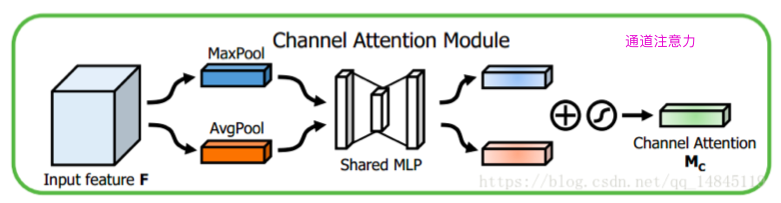
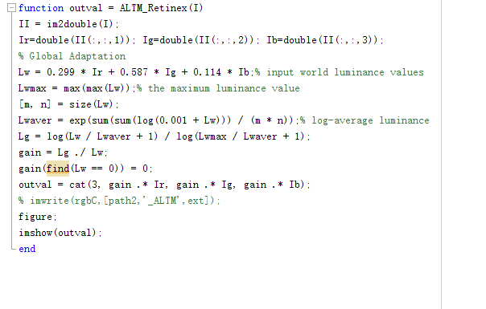

深度学习工具代码
opencv与图像处理基础¶
目标检测损失函数¶
- Smooth L1 Loss
- IoU Loss
- GIoU Loss
- DIoU Loss
- CIoU Loss
Smooth L1 Loss
- 缺点
- 这里先求出四个点的loss，再相加，前提假设4个点是相互独立的，但实际四个点是相关联的
- 实际评价框检测的指标是使用
IOU，用这种方式很可能多个检测框IOU差异很大，但smooth l1 loss相同。
def smoothL1Loss(predict_box,gt_box,reduction = "mean"):
'''
predict_box:[[x1,y1,x2,y2], [x1,y1,x2,y2],,,]
gt_box:[[x1,y1,x2,y2], [x1,y1,x2,y2],,,]
th: float
reduction:"mean"or"sum"
return: loss
'''
# 计算坐标差
x_diff = torch.abs(predict_box - gt_box) # 其实就是计算两框各自两点对应的差值，四个值
# torch.where(condition,x,y) -> True:x,False:y
loss = torch.where(x_diff < 1.0,0.5 * x_diff * x_diff,x_diff - 0.5)
if reduction != "mean" or reduction != "sum":
raise Exception("reduction must be mean or sum")
loss = torch.mean(loss) if reduction == "mean" else torch.sum(loss)
return loss
# 常用官方实现
import torch.nn.functional as F
F.smooth_l1_loss(predict_box, gt_box, reduction='sum')
IOU Loss
-
缺点
-
当预测框和目标框不相交时，
IoU(A,B)=0时，不能反映A,B距离的远近 (很近的无交集框和很远的无交集框的输出一样) ，此时损失函数不可导，IoU Loss无法优化两个框不相交的情况。YOLO中可能出现:按照GT是否在cell判断当前bbox是否需要回归two stage不一般不会出现，因为都会有一个IOU>=0.5的筛选，不会对无交集的框进行回归。- 假设预测框和目标框的大小都确定，只要两个框的相交值是确定的，其IoU值是相同时，IoU值不能反映两个框是如何相交的。
-
# IOU Loss = -ln(IOU)
def iouLoss(bboxes1, bboxes2,eps=1e-6,reduction='mean'):
'''
bboxes1:[[x1,y1,x2,y2], [x1,y1,x2,y2],,,] # predict_box
bboxes2:[[x1,y1,x2,y2], [x1,y1,x2,y2],,,] # gt_box
th: float
reduction:"mean"or"sum"
return: loss
'''
rows = bboxes1.shape[0]
cols = bboxes2.shape[0]
ious = torch.zeros((rows, cols))
if rows * cols == 0: # 该类无gtbox或者无anchor box
return ious
exchange = False
if bboxes1.shape[0] > bboxes2.shape[0]: # 预测框过多
bboxes1, bboxes2 = bboxes2, bboxes1
ious = torch.zeros((cols, rows))
exchange = True
area1 = (bboxes1[:, 2] - bboxes1[:, 0]) * (
bboxes1[:, 3] - bboxes1[:, 1]) # 预测框面积
area2 = (bboxes2[:, 2] - bboxes2[:, 0]) * (
bboxes2[:, 3] - bboxes2[:, 1]) # 真实框面积
inter_max_xy = torch.min(bboxes1[:, 2:],bboxes2[:, 2:])
inter_min_xy = torch.max(bboxes1[:, :2],bboxes2[:, :2])
inter = torch.clamp((inter_max_xy - inter_min_xy), min=eps) # eps保证分子不为0
inter_area = inter[:, 0] * inter[:, 1]
union = area1+area2-inter_area
ious = inter_area / union
ious = torch.clamp(ious,min=0,max = 1.0) # 限定范围 0~1
if exchange:
ious = ious.T
if reduction != "mean" or reduction != "sum":
raise Exception("reduction must be mean or sum")
# loss = -ln(ious)
loss = torch.mean(-ious.log()) if reduction == "mean" else torch.sum(-ious.log())
# loss = 1.0 - ious
# loss = torch.mean(1.0 - ious) if reduction == "mean" else torch.sum(1.0 - ious)
return loss
GIou Loss
-
缺点:当目标框完全包裹预测框的时候，
IoU和GIoU的值都一样，此时GIoU退化为IoU, 无法区分其相对位置关系
def giouLoss(bboxes1, bboxes2,eps=1e-6,reduction='mean'):
'''
bboxes1:[[x1,y1,x2,y2], [x1,y1,x2,y2],,,] # predict_box
bboxes2:[[x1,y1,x2,y2], [x1,y1,x2,y2],,,] # gt_box
th: float
reduction:"mean"or"sum"
return: loss
'''
rows = bboxes1.shape[0]
cols = bboxes2.shape[0]
ious = torch.zeros((rows, cols))
if rows * cols == 0:
return ious
exchange = False
if bboxes1.shape[0] > bboxes2.shape[0]:
bboxes1, bboxes2 = bboxes2, bboxes1
ious = torch.zeros((cols, rows))
exchange = True
area1 = (bboxes1[:, 2] - bboxes1[:, 0]) * (
bboxes1[:, 3] - bboxes1[:, 1])
area2 = (bboxes2[:, 2] - bboxes2[:, 0]) * (
bboxes2[:, 3] - bboxes2[:, 1])
inter_max_xy = torch.min(bboxes1[:, 2:],bboxes2[:, 2:])
inter_min_xy = torch.max(bboxes1[:, :2],bboxes2[:, :2])
# out是最小外接矩形
out_max_xy = torch.max(bboxes1[:, 2:],bboxes2[:, 2:])
out_min_xy = torch.min(bboxes1[:, :2],bboxes2[:, :2])
inter = torch.clamp((inter_max_xy - inter_min_xy), min=eps)
inter_area = inter[:, 0] * inter[:, 1]
outer = torch.clamp((out_max_xy - out_min_xy), min=eps)
outer_area = outer[:, 0] * outer[:, 1]
union = area1+area2-inter_area
closure = outer_area
gious = inter_area / union - (closure - union) / closure
gious = torch.clamp(gious,min=-1.0,max = 1.0)
if exchange:
gious = gious.T
if reduction != "mean" or reduction != "sum":
raise Exception("reduction must be mean or sum")
loss = torch.mean(1.0 - gious) if reduction == "mean" else torch.sum(1.0 - gious)
return loss
DIou Loss
- 优点
- 当目标框不重叠时，仍然可以为边界框提供梯度
DIoU loss可以直接最小化两个目标框的距离，收敛更快(GIOU优化两框的IOU,慢)- 对于目标框包裹预测框的这种情况，
DIoU Loss可以收敛的很快，而GIoU Loss此时退化为IoU Loss收敛速度较慢
def diouLoss(bboxes1, bboxes2,eps=1e-6,reduction='mean'):
'''
bboxes1:[[x1,y1,x2,y2], [x1,y1,x2,y2],,,] # predict_box
bboxes2:[[x1,y1,x2,y2], [x1,y1,x2,y2],,,] # gt_box
th: float
reduction:"mean"or"sum"
return: loss
'''
rows = bboxes1.shape[0]
cols = bboxes2.shape[0]
dious = torch.zeros((rows, cols))
if rows * cols == 0:
return dious
exchange = False
if bboxes1.shape[0] > bboxes2.shape[0]:
bboxes1, bboxes2 = bboxes2, bboxes1
dious = torch.zeros((cols, rows))
exchange = True
w1 = bboxes1[:, 2] - bboxes1[:, 0]
h1 = bboxes1[:, 3] - bboxes1[:, 1]
w2 = bboxes2[:, 2] - bboxes2[:, 0]
h2 = bboxes2[:, 3] - bboxes2[:, 1]
area1 = w1 * h1
area2 = w2 * h2
center_x1 = (bboxes1[:, 2] + bboxes1[:, 0]) / 2
center_y1 = (bboxes1[:, 3] + bboxes1[:, 1]) / 2
center_x2 = (bboxes2[:, 2] + bboxes2[:, 0]) / 2
center_y2 = (bboxes2[:, 3] + bboxes2[:, 1]) / 2
inter_max_xy = torch.min(bboxes1[:, 2:],bboxes2[:, 2:])
inter_min_xy = torch.max(bboxes1[:, :2],bboxes2[:, :2])
out_max_xy = torch.max(bboxes1[:, 2:],bboxes2[:, 2:])
out_min_xy = torch.min(bboxes1[:, :2],bboxes2[:, :2])
inter = torch.clamp((inter_max_xy - inter_min_xy), min=eps)
inter_area = inter[:, 0] * inter[:, 1]
inter_diag = (center_x2 - center_x1)**2 + (center_y2 - center_y1)**2
outer = torch.clamp((out_max_xy - out_min_xy), min=0)
outer_diag = (outer[:, 0] ** 2) + (outer[:, 1] ** 2)
union = area1+area2-inter_area
dious = inter_area / union - (inter_diag) / outer_diag
dious = torch.clamp(dious,min=-1.0,max = 1.0)
if exchange:
dious = dious.T
if reduction != "mean" or reduction != "sum":
raise Exception("reduction must be mean or sum")
loss = torch.mean(1.0 - dious) if reduction == "mean" else torch.sum(1.0 - dious)
return loss
Ciou Loss
def bbox_overlaps_ciou(bboxes1, bboxes2):
rows = bboxes1.shape[0]
cols = bboxes2.shape[0]
cious = torch.zeros((rows, cols))
if rows * cols == 0:
return cious
exchange = False
if bboxes1.shape[0] > bboxes2.shape[0]:
bboxes1, bboxes2 = bboxes2, bboxes1
cious = torch.zeros((cols, rows))
exchange = True
w1 = bboxes1[:, 2] - bboxes1[:, 0]
h1 = bboxes1[:, 3] - bboxes1[:, 1]
w2 = bboxes2[:, 2] - bboxes2[:, 0]
h2 = bboxes2[:, 3] - bboxes2[:, 1]
area1 = w1 * h1
area2 = w2 * h2
center_x1 = (bboxes1[:, 2] + bboxes1[:, 0]) / 2
center_y1 = (bboxes1[:, 3] + bboxes1[:, 1]) / 2
center_x2 = (bboxes2[:, 2] + bboxes2[:, 0]) / 2
center_y2 = (bboxes2[:, 3] + bboxes2[:, 1]) / 2
inter_max_xy = torch.min(bboxes1[:, 2:],bboxes2[:, 2:])
inter_min_xy = torch.max(bboxes1[:, :2],bboxes2[:, :2])
out_max_xy = torch.max(bboxes1[:, 2:],bboxes2[:, 2:])
out_min_xy = torch.min(bboxes1[:, :2],bboxes2[:, :2])
inter = torch.clamp((inter_max_xy - inter_min_xy), min=eps)
inter_area = inter[:, 0] * inter[:, 1]
inter_diag = (center_x2 - center_x1)**2 + (center_y2 - center_y1)**2
outer = torch.clamp((out_max_xy - out_min_xy), min=0)
outer_diag = (outer[:, 0] ** 2) + (outer[:, 1] ** 2)
union = area1+area2-inter_area
u = (inter_diag) / outer_diag
iou = inter_area / union
v = (4 / (math.pi ** 2)) * torch.pow((torch.atan(w2 / h2) - torch.atan(w1 / h1)), 2)
with torch.no_grad():
S = 1 - iou
alpha = v / (S + v)
cious = iou - (u + alpha * v)
cious = torch.clamp(cious,min=-1.0,max = 1.0)
if exchange:
cious = cious.T
if reduction != "mean" or reduction != "sum":
raise Exception("reduction must be mean or sum")
loss = torch.mean(1.0 - cious) if reduction == "mean" else torch.sum(1.0 - cious)
return loss
NMS及其变体¶
- nms
- DIoU-NMS
nms
def nms(boxes, scores, overlap=0.5, top_k=200):
"""Apply non-maximum suppression at test time to avoid detecting too many
overlapping bounding boxes for a given object.
Args:
boxes: (tensor) The location preds for the img, Shape: [num_priors,4].
scores: (tensor) The class predscores for the img, Shape:[num_priors].
overlap: (float) The overlap thresh for suppressing unnecessary boxes.
top_k: (int) The Maximum number of box preds to consider.
Return:
The indices of the kept boxes with respect to num_priors.
"""
keep = scores.new(scores.size(0)).zero_().long() # 用来存储保留下的框index
if boxes.numel() == 0:
return keep
x1 = boxes[:, 0]
y1 = boxes[:, 1]
x2 = boxes[:, 2]
y2 = boxes[:, 3]
area = torch.mul(x2 - x1, y2 - y1) # 对应位置相乘
v, idx = scores.sort(0) # 上升排序，返回values,indexs
# I = I[v >= 0.01]
idx = idx[-top_k:] # 上升排序索引，取topk个，这k个框用来遍历求解
xx1 = boxes.new() # 复制boxes的一切属性，但value=[]
yy1 = boxes.new()
xx2 = boxes.new()
yy2 = boxes.new()
w = boxes.new()
h = boxes.new()
# keep = torch.Tensor()
count = 0
while idx.numel() > 0: # torch.numel() 返回tensor变量内所有元素个数
i = idx[-1] # 取最大值的索引
# keep.append(i)
keep[count] = i # 保留score最大的框索引
count += 1
if idx.size(0) == 1:
break
idx = idx[:-1] # 遍历的时候排除最大score的框
# torch.index_select(input,dim,index,out=None) # 沿着指定维度对输入进行切片，取index中的指定的相应项，然后返回一个新的张量(不共享内存空间)
# input(tensor)->输入张量;dim(int:0/1)->索引的轴;index(LongTensor)->包含索引下标的一维张量;out(Tensor)->目标张量
torch.index_select(x1, 0, idx, out=xx1) # 根据idx索引，去除x1的值，放到xx1里面
torch.index_select(y1, 0, idx, out=yy1)
torch.index_select(x2, 0, idx, out=xx2)
torch.index_select(y2, 0, idx, out=yy2)
# store element-wise max with next highest score
xx1 = torch.clamp(xx1, min=x1[i])
yy1 = torch.clamp(yy1, min=y1[i])
xx2 = torch.clamp(xx2, max=x2[i])
yy2 = torch.clamp(yy2, max=y2[i])
w.resize_as_(xx2)
h.resize_as_(yy2)
w = xx2 - xx1
h = yy2 - yy1
# check sizes of xx1 and xx2.. after each iteration
w = torch.clamp(w, min=0.0)
h = torch.clamp(h, min=0.0)
inter = w*h
# IoU = i / (area(a) + area(b) - i)
rem_areas = torch.index_select(area, 0, idx) # load remaining areas)
union = (rem_areas - inter) + area[i]
IoU = inter/union # store result in iou
# keep only elements with an IoU <= overlap
idx = idx[IoU.le(overlap)] # IoU.le(val) 返回的是True/False组成的向量
return keep, count
# 使用
ids,count = nms(...)
torch.cat((scores[ids[:count]].unsqueeze(1),bboxes[ids[:count]]),1)
DIoU-NMS
def diounms(boxes, scores, overlap=0.5, top_k=200, beta1=1.0):
"""Apply DIoU-NMS at test time to avoid detecting too many
overlapping bounding boxes for a given object.
Args:
boxes: (tensor) The location preds for the img, Shape: [num_priors,4].
scores: (tensor) The class predscores for the img, Shape:[num_priors].
overlap: (float) The overlap thresh for suppressing unnecessary boxes.
top_k: (int) The Maximum number of box preds to consider.
beta1: (float) DIoU=IoU-R_DIoU^{beta1}.
Return:
The indices of the kept boxes with respect to num_priors.
"""
keep = scores.new(scores.size(0)).zero_().long()
if boxes.numel() == 0:
return keep
x1 = boxes[:, 0]
y1 = boxes[:, 1]
x2 = boxes[:, 2]
y2 = boxes[:, 3]
area = torch.mul(x2 - x1, y2 - y1)
v, idx = scores.sort(0) # sort in ascending order
# I = I[v >= 0.01]
idx = idx[-top_k:] # indices of the top-k largest vals
xx1 = boxes.new()
yy1 = boxes.new()
xx2 = boxes.new()
yy2 = boxes.new()
w = boxes.new()
h = boxes.new()
# keep = torch.Tensor()
count = 0
while idx.numel() > 0:
i = idx[-1] # index of current largest val
# keep.append(i)
keep[count] = i
count += 1
if idx.size(0) == 1:
break
idx = idx[:-1] # remove kept element from view
# load bboxes of next highest vals
torch.index_select(x1, 0, idx, out=xx1)
torch.index_select(y1, 0, idx, out=yy1)
torch.index_select(x2, 0, idx, out=xx2)
torch.index_select(y2, 0, idx, out=yy2)
# store element-wise max with next highest score
inx1 = torch.clamp(xx1, min=x1[i])
iny1 = torch.clamp(yy1, min=y1[i])
inx2 = torch.clamp(xx2, max=x2[i])
iny2 = torch.clamp(yy2, max=y2[i])
center_x1 = (x1[i] + x2[i]) / 2
center_y1 = (y1[i] + y2[i]) / 2
center_x2 = (xx1 + xx2) / 2
center_y2 = (yy1 + yy2) / 2
d = (center_x1 - center_x2) ** 2 + (center_y1 - center_y2) ** 2
cx1 = torch.clamp(xx1, max=x1[i])
cy1 = torch.clamp(yy1, max=y1[i])
cx2 = torch.clamp(xx2, min=x2[i])
cy2 = torch.clamp(yy2, min=y2[i])
c = (cx2 - cx1) ** 2 + (cy2 - cy1) ** 2
u= d / c
w.resize_as_(xx2)
h.resize_as_(yy2)
w = inx2 - inx1
h = iny2 - iny1
# check sizes of xx1 and xx2.. after each iteration
w = torch.clamp(w, min=0.0)
h = torch.clamp(h, min=0.0)
inter = w*h
# IoU = i / (area(a) + area(b) - i)
rem_areas = torch.index_select(area, 0, idx) # load remaining areas)
union = (rem_areas - inter) + area[i]
IoU = inter/union - u ** beta1 # store result in diou
# keep only elements with an IoU <= overlap
idx = idx[IoU.le(overlap)]
return keep, count
即插即用模块¶
即插即用模块一般是作为一个独立的模块，可以用于取代普通的卷积结构，或者直接插入网络结构中，用的好有奇效，就看你会用不会用，具体插入什么位置最好看一下论文，一般而言常插入四个位置。
-
瓶颈层：比如 ResNet，DenseNet 的瓶颈层。
-
上采样层：比如 FPN 分支，Attention UNet。
-
骨干网络最后一层：比如 SPP, ASPP 等
-
所有的 3x3 卷积：比如深度可分离卷积等
-
注意力模块code
-
AFF(注意力**特征融合**:性能优于SKNet、SENet)
-
SENet
- SKNet(SENet的改进)
- scSE(SENet的改进,分割网络常用)
- Non-Local Net(计算量过大,通用,视频分类效果更好)
- GCNet(解决Non-Local Net计算量过大问题:Non-Local Net+SENet优点)
- CCNet(Non-Local Net发展得到，语义分割常用)
- CBAM(Faster-Rcnn两个点提升,通道空间串联)
- BAM(CBAM同作者,通道空间并联)
- SplitAttention(ResNeSt = SENet + SKNet + ResNeXt，论文)
-
MS-CAM→(AFF模块/iAFF模块)|code|论文|博客
一般的特征融合(来自不同层或分支的特征的组合)通常都是通过简单的求和或串联实现，但这并不是最佳选择，本篇剔除注意力特征融合，适用于大多数场景，比如resnet/inception等层的特征融合。尺度不同如何融合：提出也了一个多尺度的通道注意力模块，该模块解决了在融合不同尺度的特征时出现的问题。同时还通过添加另一个注意力级别（称为迭代注意力特征融合）来缓解特征图的初始集成的瓶颈。
- Multi-Scale Channel Attention Module(MS-CAM):核心思想是通过改变空间池的大小，可以在多个尺度上实现通道关注;选择逐点卷积(PWConv)作为通道上下文融合器，它只利用每个空间位置的点向通道融合。
class ResGlobLocaChaFuse(HybridBlock):
def __init__(self, channels=64):
super(ResGlobLocaChaFuse, self).__init__()
with self.name_scope():
self.local_att = nn.HybridSequential(prefix='local_att')
self.local_att.add(nn.Conv2D(channels, kernel_size=1, strides=1, padding=0))
self.local_att.add(nn.BatchNorm())
self.global_att = nn.HybridSequential(prefix='global_att')
self.global_att.add(nn.GlobalAvgPool2D())
self.global_att.add(nn.Conv2D(channels, kernel_size=1, strides=1, padding=0))
self.global_att.add(nn.BatchNorm())
self.sig = nn.Activation('sigmoid')
def hybrid_forward(self, F, x, residual):
xa = x + residual
xl = self.local_att(xa)
xg = self.global_att(xa)
xlg = F.broadcast_add(xl, xg)
wei = self.sig(xlg)
xo = 2 * F.broadcast_mul(x, wei) + 2 * F.broadcast_mul(residual, 1-wei)
return xo
- AFF模块:基于多尺度信道的注意模块M，Attentional Feature Fusion (AFF) 可以被表达为
class AXYforXplusYAddFuse(HybridBlock):
def __init__(self, channels=64):
super(AXYforXplusYAddFuse, self).__init__()
with self.name_scope():
self.local_att = nn.HybridSequential(prefix='local_att')
self.local_att.add(nn.Conv2D(channels, kernel_size=1, strides=1, padding=0))
self.local_att.add(nn.BatchNorm())
self.global_att = nn.HybridSequential(prefix='global_att')
self.global_att.add(nn.GlobalAvgPool2D())
self.global_att.add(nn.Conv2D(channels, kernel_size=1, strides=1, padding=0))
self.global_att.add(nn.BatchNorm())
self.sig = nn.Activation('sigmoid')
def hybrid_forward(self, F, x, residual):
xi = x + residual
xl = self.local_att(xi)
xg = self.global_att(xi)
xlg = F.broadcast_add(xl, xg)
wei = self.sig(xlg)
xo = F.broadcast_mul(wei, residual) + x
return xo
- iAFF模块:完全上下文感知方法有一个不可避免的问题，即如何初始地集成输入特性。初始融合质量作为注意力模块的输入会对最终融合权重产生影响。由于这仍然是一个特征融合问题，一种直观的方法是使用另一个attention模块来融合输入的特征，即iterative Attentional Feature Fusion (iAFF)：
class AXYforXYAddFuse(HybridBlock):
def __init__(self, channels=64):
super(AXYforXYAddFuse, self).__init__()
with self.name_scope():
self.local_att = nn.HybridSequential(prefix='local_att')
self.local_att.add(nn.Conv2D(channels, kernel_size=1, strides=1, padding=0))
self.local_att.add(nn.BatchNorm())
self.global_att = nn.HybridSequential(prefix='global_att')
self.global_att.add(nn.GlobalAvgPool2D())
self.global_att.add(nn.Conv2D(channels, kernel_size=1, strides=1, padding=0))
self.global_att.add(nn.BatchNorm())
self.sig = nn.Activation('sigmoid')
def hybrid_forward(self, F, x, residual):
xi = x + residual
xl = self.local_att(xi)
xg = self.global_att(xi)
xlg = F.broadcast_add(xl, xg)
wei = self.sig(xlg)
xo = F.broadcast_mul(wei, xi)
return xo
SENet|论文
将全局空间信息压缩到通道描述中，以捕获与通道的依赖关系。
-
Ftr:传统的卷积网络,X与U是输入和输出，U之后是新增的 -
上半部分
-
F_sq(.):先对U做个Global Average Pooling，即Squeeze过程，输出1x1xC1x1:因为最终的scale是对整个通道作用的，作者利用的是通道间的相关性而非空间分布相关性，所以将空间上所有点的信息都平均成了一个值。
-
F_ex(.):再经过两级全连接,属于Excitation-
为什么用全连接层:为了利用通道间的相关性来训练出真正的scale。
- 如果无全连接层，那么上面分支根本无反向计算、无训练的过程，就无法基于全部数据集来训练得出通道增强、减弱的规律。
- 有人会说卷积训练出的权值就含有了scale的成分在里面，也利用了通道间的相关性，为啥还要多个
SE Block？- 因为这种卷积有空间的成分在里面，为了排除空间上的干扰就得先用GAP压缩成一个点后再作卷积，压缩后因为没有了
Height、Width的成分，这种卷积就是全连接了。
- 因为这种卷积有空间的成分在里面，为了排除空间上的干扰就得先用GAP压缩成一个点后再作卷积，压缩后因为没有了
-
第一个全连接把
C个通道压缩成了C/r个通道来降低计算量（后面跟了RELU）r是指压缩的比例。作者尝试了r在各种取值下的性能 ，最后得出结论r=16时整体性能和计算量最平衡。
- 第二个全连接再恢复回
C个通道（后面跟了Sigmoid）
-
-
最后用
sigmoid限制到[0,1]范围
-
-
下半部分
F_scale(.):上半部分输出作为scale乘到U的C个通道上， 作为下一级的输入数据
-
总结
-
原理:通过控制
scale的大小，SENet把重要通道的特征强化，非重要通道的特征弱化，从而让提取的特征指向性更强。 -
应用
-
import torch.nn as nn
class SELayer(nn.Module):
def __init__(self,channel,reduction=16):
super(SELayer,self).__init__()
self.avgpool = nn.AdaptiveAvgPool2d(1) #自适应平均池化,通道数不改变，只给outsize=xx即可->(b,n,1,1)
self.fc = nn.Sequential(
nn.Linear(channel,channel//reduction,bias=False),
nn.ReLU(inplace=True),
nn.Linear(channel//reduction,channel,bias=False),
nn.Sigmoid()
)
def forward(self,x):
b,c,h,w = x.size()
y = self.avgpool(x).view(b,c) # shape->(b,c)
y = self.fc(y).view(b,c,1,1)
return x * y.expand_as(x)
SkNet(SENet的改进)|论文
- 好多网络使用了各种
Trick降低计算量，如ResNeXt，计算量的减少，精度却略有提升。那么如果不牺牲太多计算量精度是否能再提高一点？比如使用大的KerNel=5x5 - 结合现有普遍使用的
Attention操作 - 加了上面两个操作之后，显然计算量会上去，于是作者再加了一个
Group Convlution来做trade off
Split:输入c*h*w的特征图，F^,F~均表示Group Convlution(分组卷积:减少计算量)，两者卷积核大小不同目的在于提升精度。Fuse:通过Split操作分成两路,各路进行一个Sequeeze and Excitation block操作。Select：把Sequeeze and Excitation block模块的结果通过两个softmax以回归出Channel之间的权重信息。然后把这个权重信息乘到U^,U~中，这个过程可以看做是一个`soft attention。最后把两路的特征图进行相加得到输出特征图VSelect部分的attention不仅考虑了Channel之间的权重，还考虑了两路卷积的权重.
import torch.nn as nn
import torch
class SKConv(nn.Module):
def __init__(self, features, WH, M, G, r, stride=1, L=32):
""" Constructor
Args:
features: input channel dimensionality.
WH: input spatial dimensionality, used for GAP kernel size.
M: the number of branchs.
G: num of convolution groups.
r: the radio for compute d, the length of z.
stride: stride, default 1.
L: the minimum dim of the vector z in paper, default 32.
"""
super(SKConv, self).__init__()
d = max(int(features / r), L)# 获取Fuse的z模块fc的压缩通道，其实就是上图的z
self.M = M # 分支数量
self.features = features # 输入通道
self.convs = nn.ModuleList([])
for i in range(M):# 遍历M个分支依次加入到self.convs中，只不过每个分支的kernel和padding不同
self.convs.append(
nn.Sequential(
nn.Conv2d(features,
features,
kernel_size=3 + i * 2,
stride=stride,
padding=1 + i,
groups=G), # 分组卷积,channel/groups,groups=feature为深度可分离卷
nn.BatchNorm2d(features),
nn.ReLU(inplace=False)))
# self.gap = nn.AvgPool2d(int(WH/stride))
self.fc = nn.Linear(features, d)
self.fcs = nn.ModuleList([]) # M个分支的fc列表
for i in range(M):
self.fcs.append(nn.Linear(d, features))
self.softmax = nn.Softmax(dim=1)
def forward(self, x):
for i, conv in enumerate(self.convs): # 3分支时是图中的u1,u2,u3
fea = conv(x).unsqueeze_(dim=1) # torch.Size([b, 1, c, h, w]),扩展dim=1这个通道是为了3分支的concat
if i == 0:
feas = fea
else:
feas = torch.cat([feas, fea], dim=1)
fea_U = torch.sum(feas, dim=1) # fea_U.shape->[b,c,h,w],dim=1因为相加后消失
# fea_U:是上图中第一个+
# fea_s = self.gap(fea_U).squeeze_()
fea_s = fea_U.mean(-1).mean(-1) # 沿着H*W面进行平均，类似adaptivaAvgPool2d fea_s.shape:[b,c]。h,w因为mean后消失
fea_z = self.fc(fea_s) # 通道压缩:[b,c]->[b,z]
for i, fc in enumerate(self.fcs): # 放大通道:z->c，并且M个分支处理
vector = fc(fea_z).unsqueeze_(dim=1) # [b,1,z]
if i == 0:
attention_vectors = vector
else:
attention_vectors = torch.cat([attention_vectors, vector],
dim=1)
# attention_vectors.shape->[b,M,c]
attention_vectors = self.softmax(attention_vectors)
attention_vectors = attention_vectors.unsqueeze(-1).unsqueeze(-1) # [b,M,c,1,1]
fea_v = (feas * attention_vectors).sum(dim=1) # 上图三条跳跃线,M个分支通道各自相乘并求和
return fea_v
if __name__ == "__main__":
t = torch.ones((32, 256, 24,24))
sk = SKConv(256,WH=1,M=2,G=1,r=2)
out = sk(t)
print(out.shape) # torch.Size([32, 256, 24, 24])，输入和输出大小一样
SCSE|论文
scSE 分为两个模块:一个是sSE和 cSE 模块，分别是空间注意力和通道注意力，最终以相加的方式融合。论文中只将其使用在**分割模型**(对语义分割准确率提升较大而且使分割边界更平滑)中，在很多图像分割比赛中都有用到这个模块作为 trick(比如UNet,可以放在每个卷积层后面)。
- cSE(通道注意力)
- 将
feature map通过global average pooling方法从[C, H, W]变为[C, 1, 1] - 然后使用两个
1×1卷积进行信息的处理，最终得到C维的向量 - 然后使用
sigmoid函数进行归一化，得到对应的mask - 最后通过
channel-wise相乘，得到经过信息校准过的feature map
- 将
- sSE(空间注意力)
- 直接对
feature map使用1×1卷积, 从[C, H, W]变为[1, H, W]的features - 然后使用
sigmoid进行激活得到spatial attention map - 然后直接施加到原始feature map中，完成空间的信息校准
- 直接对
# 输入维度和输出维度一样
class cSE(nn.Module):
def __init__(self, in_channels):
super().__init__()
self.avgpool = nn.AdaptiveAvgPool2d(1) # gap->[b,c,1,1]
self.Conv_Squeeze = nn.Conv2d(in_channels,
in_channels // 2,
kernel_size=1,
bias=False)
self.Conv_Excitation = nn.Conv2d(in_channels // 2,
in_channels,
kernel_size=1,
bias=False)
self.norm = nn.Sigmoid()
def forward(self, U):
z = self.avgpool(U) # shape: [b, c, h, w] to [b, c, 1, 1]
z = self.Conv_Squeeze(z) # shape: [b, c/2, 1, 1]
z = self.Conv_Excitation(z) # shape: [b, c, 1, 1]
z = self.norm(z) # 激活函数z^用sigmoid -> [b,c,1,1]
return U * z.expand_as(U) # [b,c,h,w]
# 输入维度和输出维度一样
class sSE(nn.Module):
def __init__(self, in_channels):
super().__init__()
self.Conv1x1 = nn.Conv2d(in_channels, 1, kernel_size=1, bias=False)
self.norm = nn.Sigmoid()
def forward(self, U):
q = self.Conv1x1(U) # U:[b,c,h,w] to q:[b,1,h,w]
q = self.norm(q)
return U * q # [b,c,h,w]
# 输入维度和输出维度一样
class csSE(nn.Module):
def __init__(self, in_channels):
super().__init__()
self.cSE = cSE(in_channels)
self.sSE = sSE(in_channels)
def forward(self, U):
U_sse = self.sSE(U)
U_cse = self.cSE(U)
return U_cse+U_sse
if __name__ == "__main__":
b, c, h, w = 10, 3, 64, 64
in_tensor = torch.ones(b, c, h, w)
cs_se = csSE(c)
print("in shape:",in_tensor.shape)
out_tensor = cs_se(in_tensor)
print("out shape:", out_tensor.shape)
NLNet主要借鉴了传统方法中的非局部均值滤波设计了 Non-Local 全局注意力，虽然效果好， 但是计算量偏大，建议不要在底层网络使用，可以适当在**高层网络**中使用，经过作者实验，证明了其可以应用于图像分类、目标检测、目标分割、姿态识别等视觉任务中，并且效果有不同程度的提升，在**视频分类**上效果很好，在视频分类的任务中效果可观。
# 代码见博客详解
GCNet 主要针对 Non-Local 计算量过大的问题结合了提出了解决方案,使其即能够像NLNet一样有效的对全局上下文建模，又能够像SENet一样轻量。
import torch
from torch import nn
class ContextBlock(nn.Module):
def __init__(self,inplanes,ratio,pooling_type='att',
fusion_types=('channel_add', )):
super(ContextBlock, self).__init__()
valid_fusion_types = ['channel_add', 'channel_mul']
assert pooling_type in ['avg', 'att']
assert isinstance(fusion_types, (list, tuple))
assert all([f in valid_fusion_types for f in fusion_types])
assert len(fusion_types) > 0, 'at least one fusion should be used'
self.inplanes = inplanes
self.ratio = ratio
self.planes = int(inplanes * ratio)
self.pooling_type = pooling_type
self.fusion_types = fusion_types
if pooling_type == 'att':
self.conv_mask = nn.Conv2d(inplanes, 1, kernel_size=1)
self.softmax = nn.Softmax(dim=2)
else:
self.avg_pool = nn.AdaptiveAvgPool2d(1)
if 'channel_add' in fusion_types:
self.channel_add_conv = nn.Sequential(
nn.Conv2d(self.inplanes, self.planes, kernel_size=1),
nn.LayerNorm([self.planes, 1, 1]),
nn.ReLU(inplace=True), # yapf: disable
nn.Conv2d(self.planes, self.inplanes, kernel_size=1))
else:
self.channel_add_conv = None
if 'channel_mul' in fusion_types:
self.channel_mul_conv = nn.Sequential(
nn.Conv2d(self.inplanes, self.planes, kernel_size=1),
nn.LayerNorm([self.planes, 1, 1]),
nn.ReLU(inplace=True), # yapf: disable
nn.Conv2d(self.planes, self.inplanes, kernel_size=1))
else:
self.channel_mul_conv = None
def spatial_pool(self, x):
batch, channel, height, width = x.size()
if self.pooling_type == 'att':
input_x = x
# [N, C, H * W]
input_x = input_x.view(batch, channel, height * width)
# [N, 1, C, H * W]
input_x = input_x.unsqueeze(1)
# [N, 1, H, W]
context_mask = self.conv_mask(x)
# [N, 1, H * W]
context_mask = context_mask.view(batch, 1, height * width)
# [N, 1, H * W]
context_mask = self.softmax(context_mask)
# [N, 1, H * W, 1]
context_mask = context_mask.unsqueeze(-1)
# [N, 1, C, 1]
context = torch.matmul(input_x, context_mask)
# [N, C, 1, 1]
context = context.view(batch, channel, 1, 1)
else:
# [N, C, 1, 1]
context = self.avg_pool(x)
return context
def forward(self, x):
# [N, C, 1, 1]
context = self.spatial_pool(x)
out = x
if self.channel_mul_conv is not None:
# [N, C, 1, 1]
channel_mul_term = torch.sigmoid(self.channel_mul_conv(context))
out = out * channel_mul_term
if self.channel_add_conv is not None:
# [N, C, 1, 1]
channel_add_term = self.channel_add_conv(context)
out = out + channel_add_term
return out
if __name__ == "__main__":
in_tensor = torch.ones((12, 64, 128, 128))
cb = ContextBlock(inplanes=64, ratio=1./16.,pooling_type='att')
out_tensor = cb(in_tensor)
print(in_tensor.shape)
print(out_tensor.shape)
由Non-Local 发展而来的注意力模块，其特殊之处在纵横交叉关注模块，可以以更有效的方 式从远程依赖中获取上下文信息。
CBAM|论文|ResNet中加入该模块|博客介绍
将空间注意力机制和通道注意力机制进行串联

- 输入是
H×W×C特征F，分别进行一个空间的全局平均池化和最大池化得到两个1×1×C的通道描述。 - 再将它们分别送入一个两层的神经网络，第一层神经元个数为
C/r，激活函数为Relu，第二层神经元个数为C。注意，这个两层的神经网络是共享的。 - 再将得到的两个特征**相加**后经过一个
Sigmoid激活函数得到权重系数 Mc。 - 最后，拿权重系数和原来的特征
F相乘即可得到缩放后的新特征。
- 输入一个
H×W×C的特征F‘，分别进行一个通道维度的平均池化和最大池化得到两个H×W×1的通道描述，将这两个描述按照通道拼接在一起。 - 然后，经过一个
7×7的卷积层，激活函数为Sigmoid，得到权重系数 Ms。 - 最后，拿权重系数和特征 F’ 相乘即可得到缩放后的新特征。
- 通道注意力和空间注意力这两个模块可以以并行或者串联的方式组合在一起，但是作者发现串联组合并且将通道注意力放在前面可以取得更好的效果。
import torch
import torch.nn as nn
def conv3x3(in_planes, out_planes, stride=1):
"3x3 convolution with padding"
return nn.Conv2d(in_planes,
out_planes,
kernel_size=3,
stride=stride,
padding=1,
bias=False)
class ChannelAttention(nn.Module):
def __init__(self, in_planes, ratio=4):
super(ChannelAttention, self).__init__()
self.avg_pool = nn.AdaptiveAvgPool2d(1)
self.max_pool = nn.AdaptiveMaxPool2d(1)
self.sharedMLP = nn.Sequential(
nn.Conv2d(in_planes, in_planes // ratio, 1, bias=False),
nn.ReLU(),
nn.Conv2d(in_planes // ratio, in_planes, 1, bias=False))
self.sigmoid = nn.Sigmoid()
def forward(self, x):
avgout = self.sharedMLP(self.avg_pool(x))
maxout = self.sharedMLP(self.max_pool(x))
return self.sigmoid(avgout + maxout)
class SpatialAttention(nn.Module):
def __init__(self, kernel_size=7):
super(SpatialAttention, self).__init__()
assert kernel_size in (3, 7), "kernel size must be 3 or 7"
padding = 3 if kernel_size == 7 else 1
self.conv = nn.Conv2d(2, 1, kernel_size, padding=padding, bias=False)
self.sigmoid = nn.Sigmoid()
def forward(self, x):
avgout = torch.mean(x, dim=1, keepdim=True)
maxout, _ = torch.max(x, dim=1, keepdim=True)
x = torch.cat([avgout, maxout], dim=1)
x = self.conv(x)
return self.sigmoid(x)
class BasicBlock(nn.Module):
expansion = 1
def __init__(self, inplanes, planes, stride=1, downsample=None):
super(BasicBlock, self).__init__()
self.conv1 = conv3x3(inplanes, planes, stride)
self.bn1 = nn.BatchNorm2d(planes)
self.relu = nn.ReLU(inplace=True)
self.conv2 = conv3x3(planes, planes)
self.bn2 = nn.BatchNorm2d(planes)
self.ca = ChannelAttention(planes)
self.sa = SpatialAttention()
self.downsample = downsample
self.stride = stride
def forward(self, x):
residual = x
out = self.conv1(x)
out = self.bn1(out)
out = self.relu(out)
out = self.conv2(out)
out = self.bn2(out)
out = self.ca(out) * out # 广播机制
out = self.sa(out) * out # 广播机制
if self.downsample is not None:
print("downsampling")
residual = self.downsample(x)
print(out.shape, residual.shape)
out += residual
out = self.relu(out)
return out
if __name__ == "__main__":
downsample = nn.Sequential(
nn.Conv2d(16, 32, kernel_size=1, stride=1, bias=False),
nn.BatchNorm2d(32))
x = torch.ones(3, 16, 32, 32)
model = BasicBlock(16, 32, stride=1, downsample=downsample)
print(model(x).shape)
BAM|论文
和 CBAM 同一个作者，将通道注意力和空间注意力用并联的方式连接
import torch
import math
import torch.nn as nn
import torch.nn.functional as F
class Flatten(nn.Module):
def forward(self, x):
return x.view(x.size(0), -1)
class ChannelGate(nn.Module):
def __init__(self, gate_channel, reduction_ratio=16, num_layers=1):
super(ChannelGate, self).__init__()
self.gate_c = nn.Sequential()
self.gate_c.add_module('flatten', Flatten())
gate_channels = [gate_channel] # eg 64
gate_channels += [gate_channel // reduction_ratio] * num_layers # eg 4
gate_channels += [gate_channel] # 64
# gate_channels: [64, 4, 4]
for i in range(len(gate_channels) - 2):
self.gate_c.add_module(
'gate_c_fc_%d' % i,
nn.Linear(gate_channels[i], gate_channels[i + 1]))
self.gate_c.add_module('gate_c_bn_%d' % (i + 1),
nn.BatchNorm1d(gate_channels[i + 1]))
self.gate_c.add_module('gate_c_relu_%d' % (i + 1), nn.ReLU())
self.gate_c.add_module('gate_c_fc_final',
nn.Linear(gate_channels[-2], gate_channels[-1]))
def forward(self, x):
avg_pool = F.avg_pool2d(x, x.size(2), stride=x.size(2))
return self.gate_c(avg_pool).unsqueeze(2).unsqueeze(3).expand_as(x)
class SpatialGate(nn.Module):
def __init__(self,
gate_channel,
reduction_ratio=16,
dilation_conv_num=2,
dilation_val=4):
super(SpatialGate, self).__init__()
self.gate_s = nn.Sequential()
self.gate_s.add_module(
'gate_s_conv_reduce0',
nn.Conv2d(gate_channel,
gate_channel // reduction_ratio,
kernel_size=1))
self.gate_s.add_module('gate_s_bn_reduce0',
nn.BatchNorm2d(gate_channel // reduction_ratio))
self.gate_s.add_module('gate_s_relu_reduce0', nn.ReLU())
# 进行多个空洞卷积，丰富感受野
for i in range(dilation_conv_num):
self.gate_s.add_module(
'gate_s_conv_di_%d' % i,
nn.Conv2d(gate_channel // reduction_ratio,
gate_channel // reduction_ratio,
kernel_size=3,
padding=dilation_val,
dilation=dilation_val))
self.gate_s.add_module(
'gate_s_bn_di_%d' % i,
nn.BatchNorm2d(gate_channel // reduction_ratio))
self.gate_s.add_module('gate_s_relu_di_%d' % i, nn.ReLU())
self.gate_s.add_module(
'gate_s_conv_final',
nn.Conv2d(gate_channel // reduction_ratio, 1, kernel_size=1))
def forward(self, x):
return self.gate_s(x).expand_as(x)
class BAM(nn.Module):
def __init__(self, gate_channel):
super(BAM, self).__init__()
self.channel_att = ChannelGate(gate_channel)
self.spatial_att = SpatialGate(gate_channel)
def forward(self, x):
att = 1 + F.sigmoid(self.channel_att(x) * self.spatial_att(x))
return att * x
自动检测GPU¶
def auto_select_gpu(mem_bound=500, utility_bound=0, gpus=(0, 1, 2, 3, 4, 5, 6, 7), selected_gpus=None):
import sys
import os
import subprocess
import re
import time
import numpy as np
if 'CUDA_VISIBLE_DEVCIES' in os.environ:
sys.exit(0)
if selected_gpus is None:
mem_trace = []
utility_trace = []
for i in range(5): # sample 5 times
info = subprocess.check_output('nvidia-smi', shell=True).decode('utf-8')
mem = [int(s[:-5]) for s in re.compile('\d+MiB\s/').findall(info)]
utility = [int(re.compile('\d+').findall(s)[0]) for s in re.compile('\d+%\s+Default').findall(info)]
mem_trace.append(mem)
utility_trace.append(utility)
time.sleep(0.1)
mem = np.mean(mem_trace, axis=0)
utility = np.mean(utility_trace, axis=0)
assert(len(mem) == len(utility))
nGPU = len(utility)
ideal_gpus = [i for i in range(nGPU) if mem[i] <= mem_bound and utility[i] <= utility_bound and i in gpus]
if len(ideal_gpus) < 1:
print("No gpu is available!!!")
sys.exit(0)
else:
print(f"This code will use gpus:{ideal_gpus}")
selected_gpus = list(map(str, ideal_gpus))
else:
selected_gpus = selected_gpus.split(',')
print("Setting GPU: {}".format(selected_gpus))
os.environ['CUDA_VISIBLE_DEVICES'] = ','.join(selected_gpus)
return selected_gpus
TSNE可视化¶
import numpy as np
from numpy.linalg import norm
from sklearn import manifold, decomposition
from skimage import io, transform, color
import seaborn as sns
import matplotlib.pyplot as plt
import matplotlib.patheffects as PathEffects
from matplotlib.offsetbox import OffsetImage, AnnotationBbox
from pylab import mpl
myfont = mpl.font_manager.FontProperties(fname='/usr/share/fonts/truetype/droid/DroidSansFallbackFull.ttf')
mpl.rcParams['axes.unicode_minus'] = False
from sklearn.metrics.pairwise import pairwise_distances
caffe_root = '/data_2/malin/SOFTWARES/caffe-all'
import sys, string, random
sys.path.insert(0, caffe_root+'/python')
import caffe, cv2, os
def imscatter(img_paths, X, Y, imgbox_size, ax, zoom):
'''
Show images instead of plot points while doing tsne in Python
Input:
show_img_lists: image path lists n * 1
X, Y: x and y position lists got from t-sne, x is n * 1, y is n * 1
imgbox_size: the size of image showed in the cluster picture
ax
zoom
Output:
artists
'''
X, Y = np.atleast_1d(X, Y)
XY = zip(X, Y)
artists = []
for i in range(len(img_paths)):
image = io.imread(img_paths[i])
image = transform.resize(image, imgbox_size)
im = OffsetImage(image, zoom=zoom)
ab = AnnotationBbox(im, XY[i], xycoords='data', frameon=False)
artists.append(ax.add_artist(ab))
ax.update_datalim(np.column_stack([X, Y]))
ax.autoscale()
return artists
def visual_feature_space(img_paths, features, labels, fea_dim, num_classes, classId, imgbox_size, zoom, metric='cosine'):
# compute the tsne map
num = len(labels)
F = np.zeros((num, fea_dim))
Y = np.zeros((num, ))
for i in range(num):
F[i, :] = features[i]
Y[i] = labels[i]
pre_matrix = pairwise_distances(F, F, metric=metric)
pre_matrix = pre_matrix + 1e-10
tsne = manifold.TSNE(n_components=2, metric='precomputed')
X = tsne.fit_transform(pre_matrix)
# draw
palette = np.array(sns.color_palette('hls', num_classes))
# We create a scatter plot.
f = plt.figure(figsize=(8, 8))
ax = plt.subplot(aspect='equal')
# We draw image ins,这个用不用看自己选择
#imscatter(img_paths, X[:,0], X[:,1], imgbox_size, ax=ax, zoom=zoom)
sc = ax.scatter(X[:,0], X[:,1], lw=0, s=40, c=palette[labels.astype(np.int)])
ax.axis('off')
ax.axis('tight')
# We add the labels for each digit.
txts = []
for i in range(num_classes):
# Position of each label.
xtext, ytext = np.median(X[labels==i,:], axis=0)
txt = ax.text(xtext, ytext, classId[i], fontproperties=myfont)
txt.set_path_effects([PathEffects.Stroke(linewidth=5, foreground='w'), PathEffects.Normal()])
txts.append(txt)
plt.show()
return f, ax, sc, txts
if __name__ == '__main__':
features = xxx # 注意浅拷贝和深拷贝问题
labels = xxx # labels标签
img_paths = xxx # 使用img_scatter时候需要用到
visual_feature_space(img_paths, features, labels, fea_dim=128, num_classes=2, classId=[0,1], imgbox_size=(1,1), zoom=0.1, metric='cosine')
卷积可视化-GradCAM¶
卷积可视化-GradCAM-keras/pytorch|caffe版本:caffe默认没有损失就不算梯度解决
# caffe版本,caffe 默认没有损失就不算梯度。所以要在deploy中添加force_backward: true
from PIL import Image
import matplotlib.cm as cm
class_nums = 1000
resize_ = (227,227)
vis_layer = 'pool5' # visualization layer
#Perform a backward pass for the cat class (281)
net.blobs['data'].data[...] = transformed_image
output = net.forward()
output_prob = output['prob'][0] # the output probability vector for the first image in the batch
print('predicted class is:', output_prob.argmax())
label_index = output_prob.argmax()
caffeLabel = np.zeros((1,class_nums))
caffeLabel[0,label_index] = 1;
grads=net.backward(diffs=[vis_layer],**{'prob':caffeLabel})
#bw=net.backward(diffs=[vis_layer],**{net.outputs[0]: caffeLabel})
vis_grad= grads['pool5'] # gradients of pool5 layer with respect to output class
vis_grad = np.squeeze(vis_grad,axis=0) # removing the extra dimension
mean_grads = np.mean(vis_grad, axis=(1, 2)) # mean of gradients
activations = net.blobs[vis_layer].data
activations = np.squeeze(activations,axis=0)
n_nodes = activations.shape[0] # number of nodels
vis_size = activations.shape[1:] #visualization shape
vis = np.zeros(activations.shape[1:], dtype=np.float32)
#generating saliency image
for i in range(n_nodes):
activation = activations[i, :, :]
weight = mean_grads[i]
weighted_activation = activation*weight
vis += weighted_activation
# We select only those activation which has positively contributed in prediction of given class
heatmap = np.maximum(vis, 0) # relu
heatmap /= np.max(heatmap)
src_img = cv2.resize(xxx,resize_,interpolation=cv2.INTER_LINEAR)
src_img = src_img[:,:,None] if src_img.ndim==1 else src_img
heatmap = cv2.resize(heatmap,src_image.shape[:2][::-1])
heatmap = np.uint8(255 * heatmap)
heatmap = cv2.applyColorMap(heatmap,cv2.COLORMAP_JET) # 将热力图应用于原始图像
result = heatmap * 0.4 + src_img # 注意此时heatmap是三通道，必须保证src_img是三维
网络结构可视化工具¶
https://lutzroeder.github.io/netron/ ==> https://netron.app/
VOC数据集制作¶
import os
import glob
import xml.etree.ElementTree as ET
import cv2
def GetAnnotBoxLoc(AnotPath):
tree = ET.ElementTree(file=AnotPath)
root = tree.getroot()
ObjectSet=root.findall('object')
ObjBndBoxSet=[]
for Object in ObjectSet:
BndBox=Object.find('bndbox')
x1 = int(BndBox.find('xmin').text)
y1 = int(BndBox.find('ymin').text)
x2 = int(BndBox.find('xmax').text)
y2 = int(BndBox.find('ymax').text)
ObjBndBoxSet.append([x1,y1,x2,y2])
return ObjBndBoxSet
os.makedirs("new_Annotations",exist_ok=True)
os.makedirs("new_JPEGImages",exist_ok=True)
for img_path_new in glob.glob("JPEGImages/*.jpg"):
save_img_name = img_path_new.replace("JPEGImages","new_JPEGImages")
img_new = cv2.imread(img_path_new)
target_size = 320
im_scale = float(target_size) / max(img_new.shape[:2])
if im_scale != 1:
img_new = cv2.resize(img_new,None,None,fx=im_scale,fy=im_scale,interpolation=cv2.INTER_LINEAR)
image_name = os.path.basename(img_path_new)
xml_path = os.path.join("Annotations",image_name[:-4]+".xml")
height,width = img_new.shape[:2]
img_boxs = GetAnnotBoxLoc(xml_path)
if len(img_boxs)>=10:
continue
cv2.imwrite(save_img_name,img_new)
with open(f"new_Annotations/{image_name[:-4]}.xml",'w') as xml_file:
xml_file.write("<?xml version='1.0' encoding='us-ascii'?>\n")
xml_file.write('<annotation>\n')
xml_file.write('\t<folder>simple</folder>\n')
xml_file.write('\t<filename>'+f"{image_name}"+'</filename>\n')
xml_file.write('\t<source>\n')
xml_file.write('\t\t<database>' +'The simple Database' + '</database>\n')
xml_file.write('\t\t<annotation>' +'simple' + '</annotation>\n')
xml_file.write('\t\t<image>head</image>\n')
xml_file.write('\t\t<flickrid>325991873</flickrid>\n')
xml_file.write('\t</source>\n')
xml_file.write('\t<owner>\n')
xml_file.write('\t\t<flickrid>archin</flickrid>\n')
xml_file.write('\t\t<name>?</name>\n')
xml_file.write('\t</owner>\n')
xml_file.write('\t<size>\n')
xml_file.write('\t\t<width>' + str(width) + '</width>\n')
xml_file.write('\t\t<height>' + str(height) + '</height>\n')
xml_file.write('\t\t<depth>3</depth>\n')
xml_file.write('\t</size>\n')
xml_file.write('\t<segmented>0</segmented>\n')
# write the region of text on xml file
for spt in img_boxs:
xml_file.write('\t<object>\n')
# 修改名称
xml_file.write('\t\t<name>head</name>\n')
xml_file.write('\t\t<pose>Unspecified</pose>\n')
xml_file.write('\t\t<truncated>0</truncated>\n')
xml_file.write('\t\t<difficult>0</difficult>\n')
xml_file.write('\t\t<bndbox>\n')
xml_file.write('\t\t\t<xmin>' + str(int(float(spt[0])*im_scale)) + '</xmin>\n')
xml_file.write('\t\t\t<ymin>' + str(int(float(spt[1])*im_scale)) + '</ymin>\n')
xml_file.write('\t\t\t<xmax>' + str(int(float(spt[2])*im_scale)) + '</xmax>\n')
xml_file.write('\t\t\t<ymax>' + str(int(float(spt[3])*im_scale)) + '</ymax>\n')
xml_file.write('\t\t</bndbox>\n')
xml_file.write('\t</object>\n')
xml_file.write('</annotation>')
数据集anchor计算(yolov3)¶
#coding=utf-8
import xml.etree.ElementTree as ET
import numpy as np
import glob
def iou(box, clusters):
"""
计算一个ground truth边界盒和k个先验框(Anchor)的交并比(IOU)值。
参数box: 元组或者数据，代表ground truth的长宽。
参数clusters: 形如(k,2)的numpy数组，其中k是聚类Anchor框的个数
返回：ground truth和每个Anchor框的交并比。
"""
x = np.minimum(clusters[:, 0], box[0])
y = np.minimum(clusters[:, 1], box[1])
if np.count_nonzero(x == 0) > 0 or np.count_nonzero(y == 0) > 0:
raise ValueError("Box has no area")
intersection = x * y
box_area = box[0] * box[1]
cluster_area = clusters[:, 0] * clusters[:, 1]
iou_ = intersection / (box_area + cluster_area - intersection)
return iou_
def avg_iou(boxes, clusters):
"""
计算一个ground truth和k个Anchor的交并比的均值。
"""
return np.mean([np.max(iou(boxes[i], clusters)) for i in range(boxes.shape[0])])
def kmeans(boxes, k, dist=np.median):
"""
利用IOU值进行K-means聚类
参数boxes: 形状为(r, 2)的ground truth框，其中r是ground truth的个数
参数k: Anchor的个数
参数dist: 距离函数
返回值：形状为(k, 2)的k个Anchor框
"""
# 即是上面提到的r
rows = boxes.shape[0]
# 距离数组，计算每个ground truth和k个Anchor的距离
distances = np.empty((rows, k))
# 上一次每个ground truth"距离"最近的Anchor索引
last_clusters = np.zeros((rows,))
# 设置随机数种子
np.random.seed()
# 初始化聚类中心，k个簇，从r个ground truth随机选k个
clusters = boxes[np.random.choice(rows, k, replace=False)]
# 开始聚类
while True:
# 计算每个ground truth和k个Anchor的距离，用1-IOU(box,anchor)来计算
for row in range(rows):
distances[row] = 1 - iou(boxes[row], clusters)
# 对每个ground truth，选取距离最小的那个Anchor，并存下索引
nearest_clusters = np.argmin(distances, axis=1)
# 如果当前每个ground truth"距离"最近的Anchor索引和上一次一样，聚类结束
if (last_clusters == nearest_clusters).all():
break
# 更新簇中心为簇里面所有的ground truth框的均值
for cluster in range(k):
clusters[cluster] = dist(boxes[nearest_clusters == cluster], axis=0)
# 更新每个ground truth"距离"最近的Anchor索引
last_clusters = nearest_clusters
return clusters
# 加载自己的数据集，只需要所有labelimg标注出来的xml文件即可
def load_dataset(path):
dataset = []
for xml_file in glob.glob("{}/*xml".format(path)):
tree = ET.parse(xml_file)
# 图片高度
height = int(tree.findtext("./size/height"))
# 图片宽度
width = int(tree.findtext("./size/width"))
for obj in tree.iter("object"):
# 偏移量,这里已经是归一化后的x、y
xmin = int(obj.findtext("bndbox/xmin")) / width
ymin = int(obj.findtext("bndbox/ymin")) / height
xmax = int(obj.findtext("bndbox/xmax")) / width
ymax = int(obj.findtext("bndbox/ymax")) / height
xmin = np.float64(xmin)
ymin = np.float64(ymin)
xmax = np.float64(xmax)
ymax = np.float64(ymax)
if xmax == xmin or ymax == ymin:
print(xml_file)
# 将Anchor的长宽放入dateset，运行kmeans获得Anchor
dataset.append([xmax - xmin, ymax - ymin])
return np.array(dataset)
if __name__ == '__main__':
ANNOTATIONS_PATH = "F:\Annotations" #xml文件所在文件夹
CLUSTERS = 9 #聚类数量，anchor数量
INPUTDIM = 416 #输入网络大小
data = load_dataset(ANNOTATIONS_PATH)
# kmeans函数得到的结果实际上是归一化到0-1之间的
out = kmeans(data, k=CLUSTERS)
print('Boxes:')
# 然后Anchor的输出是在此基础上乘以输入分辨率的大小(模型输出),所以Anchor和图片的输入分辨率是有关的
print(np.array(out)*INPUTDIM)
print("Accuracy: {:.2f}%".format(avg_iou(data, out) * 100))
final_anchors = np.around(out[:, 0] / out[:, 1], decimals=2).tolist()
print("Before Sort Ratios:\n {}".format(final_anchors))
print("After Sort Ratios:\n {}".format(sorted(final_anchors)))
MAP计算库¶
人脸图片扩充¶
def merge_image(img, bboxes, scale):
if scale == 1.0 / 4:
scale_w = int(img.shape[1] * scale)
scale_h = int(img.shape[0] * scale)
img_scale = cv2.resize(img, (scale_w, scale_h))
# import pdb; pdb.set_trace()
bboxes_scale = bboxes * scale
merge_img = np.zeros(np.array([scale_h*2, scale_w*2, 3], dtype=int), dtype=img_scale.dtype)
merge_bboxes = np.zeros((0,4))
for i in range(4):
flip = random.randint(0, 1)
if flip:
img_scale = cv2.flip(img_scale, flip)
bboxes_scale[:,[2, 0]] = img_scale.shape[1] - 1 - bboxes_scale[:,[0,2]]
merge_img[(i // 2) * scale_h : (i // 2 + 1) * scale_h, (i % 2) * scale_w : (i % 2 + 1) * scale_w,:] = img_scale
offset = np.array([(i % 2) * scale_w, (i // 2) * scale_h, (i % 2) * scale_w, (i // 2) * scale_h])
merge_bboxes = np.concatenate((merge_bboxes, bboxes_scale + offset), axis = 0)
return (merge_img, merge_bboxes, scale)
img_scale, bboxes_scale, scale = merge_image(img, bboxes, scale*0.5)
scale = 2 * scale
scale_w = int(img.shape[1] * scale)
scale_h = int(img.shape[0] * scale)
merge_img = np.zeros(np.array([scale_h*2, scale_w*2, 3], dtype=int), dtype=img_scale.dtype)
merge_bboxes = np.zeros((0,4))
pos = random.randint(0, 3)
cut_ymin,cut_ymax,cut_xmin,cut_xmax = (pos // 2) * scale_h,(pos // 2 + 1) * scale_h, (pos % 2) * scale_w,(pos % 2 + 1) * scale_w
y_pad = img_scale.shape[0] - (cut_ymax - cut_ymin)
x_pad = img_scale.shape[1] - (cut_xmax - cut_xmin)
merge_img[cut_ymin:cut_ymax+y_pad,cut_xmin:cut_xmax+x_pad,:] = img_scale
offset = np.array([(pos % 2) * scale_w, (pos // 2) * scale_h, (pos % 2) * scale_w, (pos // 2) * scale_h])
merge_bboxes = np.concatenate((merge_bboxes, bboxes_scale + offset), axis = 0)
img_scale = cv2.resize(img, (scale_w, scale_h))
bboxes_scale = bboxes * scale
for i in range(4):
if i == pos:
continue
flip = random.randint(0, 1)
if flip:
img_scale = cv2.flip(img_scale, flip)
bboxes_scale[:,[2,0]] = img_scale.shape[1] - 1 - bboxes_scale[:,[0,2]]
merge_img[(i // 2) * scale_h : (i // 2 + 1) * scale_h, (i % 2) * scale_w : (i % 2 + 1) * scale_w,:] = img_scale
offset = np.array([(i % 2) * scale_w, (i // 2) * scale_h, (i % 2) * scale_w, (i // 2) * scale_h])
merge_bboxes = np.concatenate((merge_bboxes, bboxes_scale + offset), axis = 0)
return (merge_img, merge_bboxes, scale)
def expand_rect(merge_img,merge_bboxes,img,img_boxs,expand_img_num=4):
src_h,src_w = img.shape[:2]
merge_h,merge_w = merge_img.shape[:2]
if src_h>=src_w:
img = np.vstack([img]*expand_img_num)
im_scale = float(merge_img.shape[0] / img.shape[0])
img_boxs = img_boxs*im_scale
temp_boxs = img_boxs.copy()
for index in range(1,expand_img_num):
temp_boxs[:,[1,3]] += src_h*im_scale
img_boxs = np.vstack([img_boxs,temp_boxs])
else:
img = np.hstack([img]*expand_img_num)
im_scale = float(merge_img.shape[1] / img.shape[1])
img_boxs = img_boxs*im_scale
temp_boxs = img_boxs.copy()
for index in range(1,expand_img_num):
temp_boxs[:,[0,2]] += src_w*im_scale
img_boxs = np.vstack([img_boxs,temp_boxs])
img = cv2.resize(img, None, None, fx=im_scale,fy=im_scale, interpolation=cv2.INTER_LINEAR)
if src_h>=src_w:
img_boxs[:,[0,2]] += merge_w
result_img = np.hstack((merge_img,img))
else:
img_boxs[:,[1,3]] += merge_h
result_img = np.vstack((merge_img,img))
result_boxes = np.vstack([merge_bboxes,img_boxs])
pad_w = int((result_img.shape[0] - result_img.shape[1]) // 2)
if pad_w>=0:
result_img = np.pad(result_img,((0,0),(pad_w,pad_w),(0,0)))
result_boxes[:,[0,2]] += pad_w
else:
pad_h = abs(pad_w)
result_img = np.pad(result_img,((pad_h,pad_h),(0,0),(0,0)))
result_boxes[:,[1,3]] += pad_h
return result_img,result_boxes.astype(np.int)
if __name__ == '__main__':
merge_img, merge_bboxes,_ = merge_image(img_new, img_boxs, 1.0)
result_img,result_boxes = expand_rect(merge_img,merge_bboxes,img_new,img_boxs)
图像增亮¶

import cv2
import glob
import numpy as np
def gain_light(img):
h,w = img.shape[:2]
lw = cv2.cvtColor(img,cv2.COLOR_RGB2GRAY) / 255.
lwaver = np.exp(np.log(0.001 + lw).sum() / (h*w))
gain = (np.log(lw / lwaver + 1) / np.log(lw.max() / lwaver + 1)) / lw
gain[lw==0] = 0
return cv2.convertScaleAbs(img * gain[:,:,None])